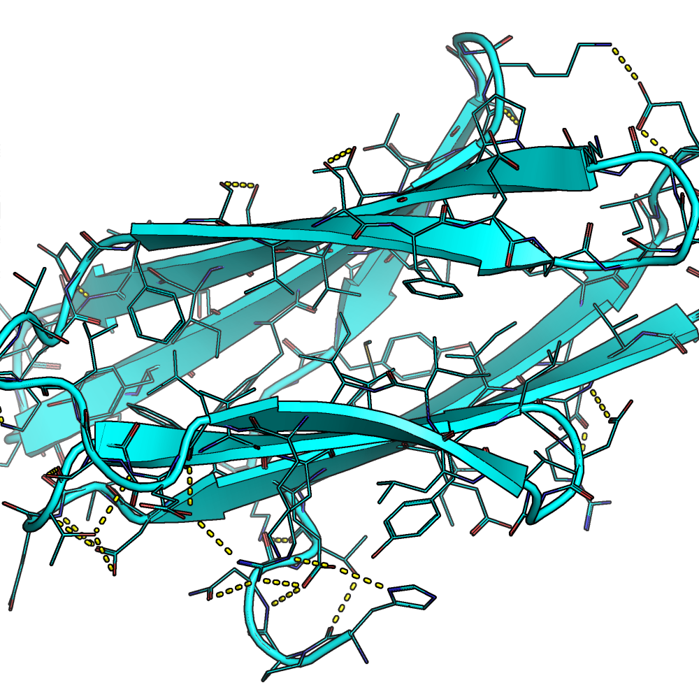
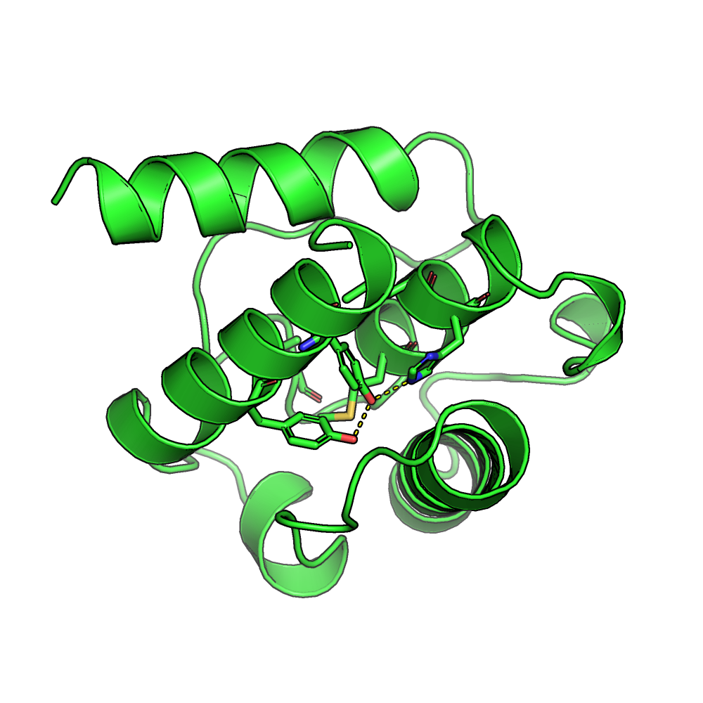
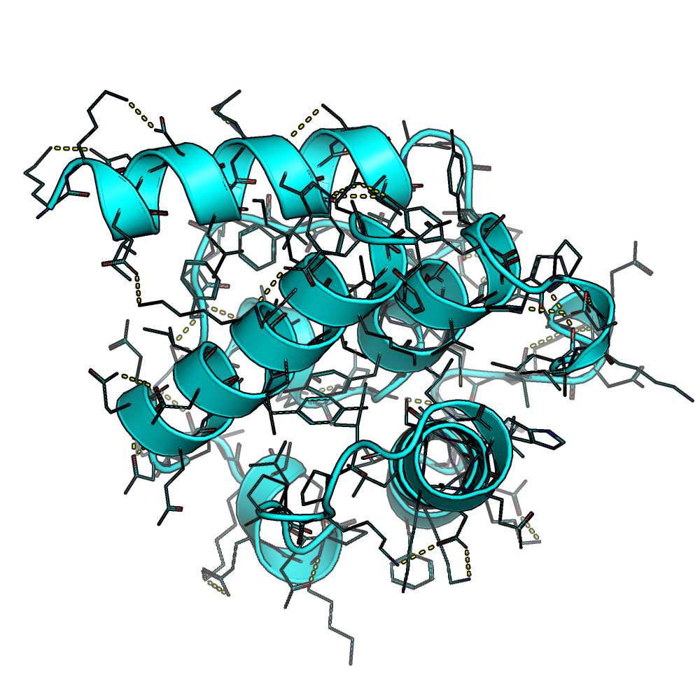

The development of de novo proteins with the application of Computational Protein Design has been rapidly growing in the last few decades, while the primary strategy to achieve new proteins remains the same:
Decide on a class of structure.
Use software like Rosetta to design thousands of potential conformations.
Minimize their free energies.
Iterate.
However, with the rising amounts of crystal-structure data, more automated Machine Learning Models for Protein Structure Prediction are emerging.
One example of a successful model explores the tractability of building side-chain conformers in a structure based context.
The algorithm lacked the ability to control the design process to produce desired chemical structures, such as internal Hydrogen Bonding Networks between side-chains.
The resulted functionality can take in a file with a command for each residue, thus limiting their potential identities and guiding the design in a specific way.
Below is an example of a resfile that sets constraints on particular residue during the design process.
The first command ALLAA (Allow All Amino Acids) is a default constraint for all residues not mentioned after the START keyword.
Following are command for particular residues, such as residue #65 is constrained to polar amino acids.
The Protein Sequence Design Algorithm is a protein design tool that conditions on local backbone structure and chemical environment to produce conformations that generalize to backbones with unseen topologies, producing de novo sequences
The algorithm uses a 3-Dimensional Convolutional Neural Network that serves as a classifier trained on CATH 4.2 S95 domains.
The model can predict amino acid types with 57.3% accuracy using the conditional model.
The algorithm expects that the likelihood of a given side-chain identity and the following conformation is dictated by the surrounding environment.
It defines the environment \(env_i\) as the combination of the backbone atoms \(X\) and neighboring residues \(y_{NB(i)}\).
where \(r_i \in \{1...20\}\) is the amino acid type of residue \( i \) and \({\chi_1}_i, {\chi_2}_i, {\chi_3}_i, {\chi_4}_i \in [-180^{\circ}, 180^{\circ}]\) are the torsion angles for the side chain.
The algorithm samples a residue type based on the provided model distribution.
That sample is then used to predict for the torsion angles, from which the algorithm samples in an autoregressive fashion.
Building the Interface
The output of the conditional and baseline models is a multi-dimensional matrix known as a tensor.
The tensor is populated with un-normalized log probabilities of possible residue types for each particular space.
from torch.distributions.categorical import Categorical
...
self.logits = get_energy(self.pose) # gets the un-normalized log probabilities from the models
...
self.sample(self.logits, idx) # calls sampling with the tensor
...
dist = Categorical(logits=logits[idx]) # creates a distribution object from which the sample is drawn
The interface is based on modifying those un-normalized log probabilities before they are used to create a distribution object to draw a sample
Results
The results show that constraining certain residues inside the core of the protein can result in the model building chemical structures like hydrogen bonding networks
The resulted all-beta structure 3mx7_gt with internal hydrogen bonding networks produced with the resfile function (Source: GitHub Documentation)

The designed all-beta structure 3mx7_gt without using the resfile function (Source: GitHub Documentation)
More Results
The model also produces more polar side-chains in the core if the neighboring residues are set to polar amino acids as the distribution tends to shift.

The resulted all-alpha structure 1bkr_gt with internal hydrogen bonding networks produced with the resfile function (Source: GitHub Documentation)

The designed all-alpha structure 1bkr_gt without using the resfile function (Source: GitHub Documentation)